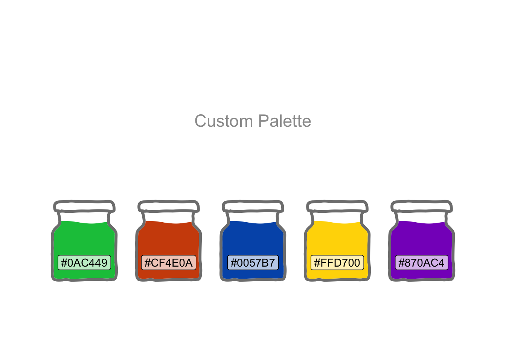
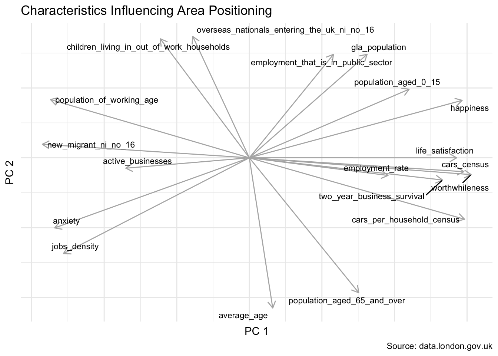

Finding Happiness in The Smoke

The Smoke, to use London’s nickname, has 32 boroughs plus the central business district known as the City of London. What does Cluster Analysis tell us about the characteristics that bind them?
The graphics will use a custom palette created in Adobe Colour.
theme_set(theme_bw())
cols <- c("#0AC449", "#CF4E0A", "#0057B7", "#FFD700", "#870AC4") |>
fct_inorder()
tibble(x = 1:5, y = 1) |>
ggplot(aes(x, y, fill = cols)) +
geom_col(colour = "white") +
geom_label(aes(label = cols), size = 4, vjust = 2, fill = "white") +
annotate(
"label",
x = 3, y = 0.5,
label = "Custom Pallette",
fill = "white",
alpha = 0.8,
size = 6
) +
scale_fill_manual(values = as.character(cols)) +
theme_void() +
theme(legend.position = "none")
The London Datastore provides data profiling each area.
raw_df <-
read_xlsx("london-borough-profiles.xlsx", sheet = 2) |>
clean_names() |>
filter(str_starts(code, "E")) |>
mutate(across(where(is.character), \(x) na_if(x, ".")),
inner_outer_london = str_remove(inner_outer_london, " London")
)Dimensionality Reduction
These data include 81 numeric variables quantifying such things as population density, happiness and age. Way too many variables to visualise two-dimensionally. Principal Components Analysis can reduce the bulk of the information down to two variables. It is then possible to more easily visualise the relationships.
The City of London, aka “The Square Mile”, is quite distinct from the other 32 areas and has many NA values.
raw_df |>
rowwise() |>
mutate(na_count = sum(is.na(cur_data()))) |>
select(area_name, na_count) |>
filter(na_count != 0) |>
arrange(desc(na_count))| area_name | na_count |
|---|---|
| City of London | 27 |
| Kensington and Chelsea | 3 |
| Barnet | 1 |
| Camden | 1 |
| Hackney | 1 |
| Haringey | 1 |
| Harrow | 1 |
| Islington | 1 |
| Lewisham | 1 |
| Merton | 1 |
| Richmond upon Thames | 1 |
| Waltham Forest | 1 |
| Wandsworth | 1 |
Not surprisingly, the two-dimensional visualisation sets the City of London apart. And the other 32 are broadly, albeit with some mixing, divided into inner and outer London boroughs.
pca_fit <- raw_df |>
select(where(is.numeric)) |>
prcomp(scale = TRUE)
pca_augmented <-
pca_fit |>
augment(raw_df)
pca_augmented |>
ggplot(aes(.fittedPC1, .fittedPC2, fill = inner_outer_london)) +
geom_label(aes(label = area_name), size = 2, hjust = "inward") +
scale_fill_manual(values = as.character(cols)) +
labs(
title = "33 London Areas", fill = "London",
x = "Principal Component 1", y = "Principal Component 2",
caption = "Source: data.london.gov.uk"
)After squeezing the many dimensions into two, how much of the original information was it possible to retain?
pca_tidied <- pca_fit |>
tidy(matrix = "eigenvalues")
pct_explained <-
pca_tidied |>
pluck("cumulative", 2)
pca_tidied |>
ggplot(aes(PC, percent)) +
geom_col(aes(fill = if_else(PC <= 2, TRUE, FALSE)),
alpha = 0.8, show.legend = FALSE
) +
scale_y_continuous(labels = label_percent(1)) +
scale_fill_manual(values = as.character(cols)) +
coord_flip() +
labs(
title = glue(
"{percent(pct_explained, 0.1)} of the ",
"Variance Explained by Principal Components 1 & 2"
),
x = "Principal Component", y = NULL
)
Whilst we do lose ease of interpretation by distilling the information in this way, it is still possible to understand which of the original variables influenced their two-dimensional positioning.
The axes depicted by the arrows below tell us that anxiety scores play a significant role in the placement of the City of London towards the upper-left. Average age pushes areas more towards the top. And happiness influences the bottom-right.
pattern <-
str_c("_\\d{4}|_st.+|_score|_rates|^percent(_of)?_|",
"^proportion_of_|^population(_of)?_|^number(_of)?_|",
"_\\d{2}_out_of_\\d{2}|_estimate|_percent")
pca_fit |>
tidy(matrix = "rotation") |>
pivot_wider(names_from = "PC", names_prefix = "PC",
values_from = "value") |>
mutate(column = str_remove_all(column, pattern)) |>
ggplot(aes(PC1, PC2)) +
geom_segment(
xend = 0, yend = 0, colour = "grey70",
arrow = arrow(ends = "first", length = unit(8, "pt"))
) +
geom_text_repel(aes(label = column), size = 3) +
theme_minimal() +
labs(
x = "PC 1", y = "PC 2",
title = "Characteristics Influencing Area Positioning",
caption = "Source: data.london.gov.uk"
) +
theme(axis.text = element_blank())
This may be validated by ranking all 33 areas by these three original variables.
pca_long <-
pca_augmented |>
select(area_name, matches("happ|anx|average_age")) |>
rename_with(~ str_remove(., "_.*")) |>
rename("avg_age" = "average") |>
pivot_longer(-area, values_to = "score") |>
mutate(area = reorder_within(area, score, name))
pca_long |>
ggplot(aes(area, score, colour = name)) +
geom_point(show.legend = FALSE) +
facet_wrap(~name, scales = "free") +
scale_x_reordered() +
scale_colour_manual(values = as.character(cols)) +
coord_flip() +
labs(x = NULL, caption = "Source: data.london.gov.uk")
Cluster Modelling
To collect these areas into their natural groupings, a decision is needed on the desired number of clusters. We can visualise dividing the areas into 1, 2, 3 and so forth clusters. And, per below, 3 appears to nicely capture the natural grouping of the coloured points.
set.seed(2022)
kclusts <-
tibble(k = 1:6) |>
mutate(
kclust = map(k, \(k) kmeans(
pca_augmented |> select(.fittedPC1, .fittedPC2), k)),
tidied = map(kclust, tidy),
glanced = map(kclust, glance),
augmented = map(kclust, augment, pca_augmented)
)
assignments <-
kclusts |>
unnest(cols = c(augmented))
clusters <-
kclusts |>
unnest(cols = c(tidied))
assignments |>
ggplot(aes(x = .fittedPC1, y = .fittedPC2)) +
geom_point(aes(color = .cluster)) +
facet_wrap(~k, nrow = 2) +
scale_colour_manual(values = as.character(cols[c(1:6)])) +
geom_point(data = clusters, size = 4, shape = 13) +
labs(
title = "How Many Clusters Best Captures the Groupings?",
subtitle = "X Marks the Cluster Centre",
caption = "Source: data.london.gov.uk"
)The elbow method provides a more mathematical approach to the choice. The compactness of the clustering (as measured by the total within-cluster sum of squares) is significantly optimised when choosing 3 clusters, with diminishing returns thereafter.
kclusts |>
unnest(cols = c(glanced)) |>
ggplot(aes(k, tot.withinss)) +
geom_line() +
geom_point() +
geom_label(aes(label = if_else(k == 3, "Elbow", NA_character_)),
nudge_y = -25, fill = cols[1]
) +
labs(
title = "Elbow Method",
x = "Clusters", y = "Within-Cluster Variance"
)And settling on this choice of 3 clusters, we get this split.
assignments |>
filter(k == 3) |>
ggplot(aes(.fittedPC1, .fittedPC2, fill = .cluster)) +
geom_label(aes(label = area_name),
size = 2, hjust = "inward", overlap = FALSE) +
scale_fill_manual(values = as.character(cols[c(1, 2, 4)])) +
labs(
title = "Closely-Related London Areas", fill = "Cluster",
x = "Principal Component 1", y = "Principal Component 2",
caption = "Source: data.london.gov.uk"
)
Using Tidymodels
An alternative approach is to use the new tidyclust(Hvitfeldt and Bodwin 2022) package which augments the tidymodels framework with a tidy unified interface to clustering models.
First we tune the model with 1 to 6 clusters and review how well they capture the natural groupings.
kmeans_spec <- k_means(num_clusters = tune()) |>
set_engine("stats", algorithm = "Hartigan-Wong")
kmeans_rec <- raw_df |>
select(where(is.numeric)) |>
recipe(~ .) |>
step_zv(all_predictors()) |>
step_normalize(all_predictors()) |>
step_pca(all_predictors(), threshold = 0.9)
kmeans_wflow <- workflow() |>
add_model(kmeans_spec) |>
add_recipe(kmeans_rec)
kmeans_cv <- vfold_cv(pca_augmented, v = 5)
kmeans_res <- tune_cluster(
kmeans_wflow,
resamples = kmeans_cv,
grid = crossing(
num_clusters = seq(1, 6, 1)
),
control = control_grid(save_pred = TRUE),
metrics = cluster_metric_set(sse_total, sse_ratio)
)
kmeans_metrics <- kmeans_res |> collect_metrics()
kmeans_metrics |>
filter(.metric == "sse_ratio") |>
ggplot(aes(num_clusters, mean)) +
geom_point() +
geom_line() +
geom_label(aes(label = if_else(num_clusters == 3, "Elbow", NA_character_)),
nudge_y = -0.1, fill = cols[1]) +
labs(title = "Elbow Method", x = "Clusters", y = "WSS") +
scale_x_continuous(breaks = 1:6)
Again we can visualise the 3 clusters suggested by the elbow method.
kmeans_spec <- k_means(num_clusters = 3) |>
set_engine("stats", algorithm = "Hartigan-Wong")
kmeans_wflow <- kmeans_wflow |>
update_model(kmeans_spec)
kmeans_fit <- kmeans_wflow |>
fit(pca_augmented)
kmeans_clust <- kmeans_fit |>
extract_centroids() |>
rename_with(~ str_c(".fitted", .), starts_with("PC"))
kmeans_aug <- kmeans_fit |>
augment(pca_augmented)
kmeans_aug |>
mutate(.pred_cluster = str_remove(.pred_cluster, "Cluster_")) |>
ggplot(aes(.fittedPC1, .fittedPC2)) +
geom_label(aes(label = area_name, colour = .pred_cluster),
size = 2, hjust = "inward") +
scale_colour_manual(values = as.character(cols[c(1:3, 5)])) +
geom_point(data = kmeans_clust, size = 4, shape = 13) +
labs(
title = "Closely-Related London Areas", fill = "Cluster",
subtitle = "X Marks the Cluster Centre",
x = "Principal Component 1", y = "Principal Component 2",
colour = "Cluster",
caption = "Source: data.london.gov.uk"
)
How does this look with geospatial data? And how do the clusters relate to inner and outer London?
shape_df <-
st_read("statistical-gis-boundaries-london/ESRI",
"London_Borough_Excluding_MHW",
as_tibble = TRUE, quiet = TRUE
) |>
left_join(assignments |>
filter(k == 3), by = join_by(GSS_CODE == code)) |>
select(.cluster, inner_outer_london, NAME, geometry) |>
pivot_longer(c(.cluster, inner_outer_london)) |>
mutate(value = recode(value, "1" = "Cluster 1",
"2" = "Cluster 2", "3" = "Cluster 3"))
shape_df |>
mutate(name = recode(name,
".cluster" = "By Cluster",
"inner_outer_london" = "By Inner/Outer"
)) |>
ggplot() +
geom_sf(aes(fill = value), colour = "white") +
geom_sf_label(aes(label = NAME), size = 2, alpha = 0.7) +
scale_fill_manual(values = as.character(cols[c(3, 4, 1, 2, 5)])) +
facet_wrap(~name) +
theme_void() +
theme(legend.position = "none") +
labs(fill = NULL)Not too dissimilar, but with some notable differences.
The City of London is a cluster apart in the heart of London. Kensington and Chelsea is an inner-London borough, but exhibits outer-London characteristics. And the reverse is true of the likes of Brent and Greenwich.
Dimensionality reduction is further explored in East-West Drift coupled with animation.
R Toolbox
Summarising below the packages and functions used in this post enables me to separately create a toolbox visualisation summarising the usage of packages and functions across all posts.
| Package | Function |
|---|---|
| base | as.character[8], c[9], is.na[1], library[12], seq[1], set.seed[1], sum[1] |
| conflicted | conflict_prefer_all[1], conflict_scout[1] |
| dplyr | across[1], arrange[1], cur_data[1], desc[1], filter[5], if_else[3], join_by[1], left_join[1], mutate[8], na_if[1], recode[2], rename[1], rename_with[2], rowwise[1], select[6], starts_with[1], where[3] |
| forcats | fct_inorder[1] |
| generics | augment[2], fit[1], tidy[2] |
| ggplot2 | aes[21], annotate[1], arrow[1], coord_flip[2], element_blank[1], facet_wrap[3], geom_col[2], geom_label[6], geom_line[2], geom_point[6], geom_segment[1], geom_sf[1], geom_sf_label[1], ggplot[11], labs[10], scale_colour_manual[3], scale_fill_manual[5], scale_x_continuous[1], scale_y_continuous[1], theme[3], theme_bw[1], theme_minimal[1], theme_set[1], theme_void[2] |
| ggrepel | geom_text_repel[1] |
| glue | glue[1] |
| grid | unit[1] |
| hardhat | tune[1] |
| janitor | clean_names[1] |
| parsnip | set_engine[2] |
| purrr | map[4], pluck[1] |
| readxl | read_xlsx[1] |
| recipes | all_predictors[3], recipe[1], step_normalize[1], step_pca[1], step_zv[1] |
| rsample | vfold_cv[1] |
| scales | label_percent[1], number[1], percent[2] |
| sf | st_read[1] |
| stats | kmeans[1], prcomp[1] |
| stringr | str_c[2], str_remove[3], str_remove_all[1], str_starts[1] |
| tibble | tibble[2] |
| tidyclust | cluster_metric_set[1], extract_centroids[1], k_means[2], tune_cluster[1] |
| tidyr | crossing[1], pivot_longer[2], pivot_wider[1], population[1], unnest[3] |
| tidyselect | matches[1] |
| tidytext | reorder_within[1], scale_x_reordered[1] |
| tune | collect_metrics[1], control_grid[1] |
| usedthese | used_here[1] |
| workflows | add_model[1], add_recipe[1], update_model[1], workflow[1] |